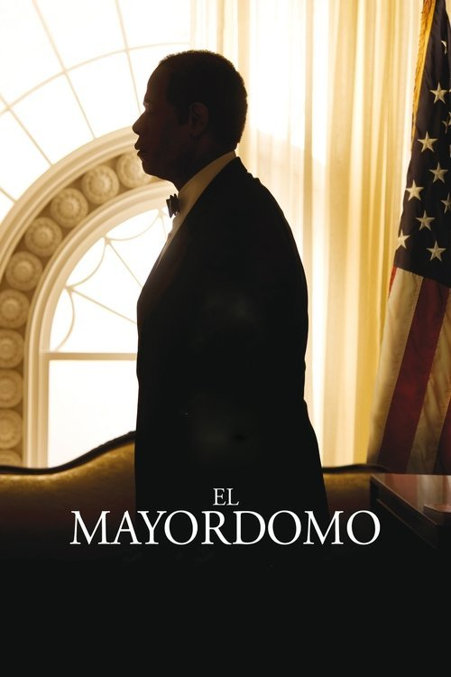

El mayordomo (2013)
Sinopsis Rápida
Durante ocho décadas, un hombre silencioso observa la historia estadounidense desde la Casa Blanca, siendo testigo de la segregación, los derechos civiles y el cambio social, mientras su vida personal se ve marcada por los acontecimientos que él mismo presencia.
Sinopsis Detallada
Cecil Gaines, un hombre afroamericano, trabaja como mayordomo en la Casa Blanca durante ocho décadas, sirviendo a ocho presidentes diferentes. Su impecable servicio y discreción ocultan una vida familiar compleja y la lucha por la igualdad racial en Estados Unidos. La película explora la tensión entre su lealtad a su país y su deseo por la justicia social, mostrando un retrato conmovedor de la historia americana a través de la experiencia personal de un hombre que estuvo en el centro del poder.
¿Por qué tenés que verla?
- Una poderosa y emotiva historia sobre la lucha por los derechos civiles vista desde una perspectiva única.
- Las actuaciones estelares de Forest Whitaker y Oprah Winfrey son simplemente impresionantes.
- La película ofrece una reflexión conmovedora sobre la historia de Estados Unidos y su legado en materia de raza y política.
- Un retrato fascinante de la vida de un hombre común frente a eventos históricos extraordinarios.
Idea Extra
Comparación entre la representación histórica de la película y eventos reales. Análisis de la influencia de las decisiones presidenciales en la vida de Cecil Gaines.
{{CONTENIDO_RELACIONADO}}